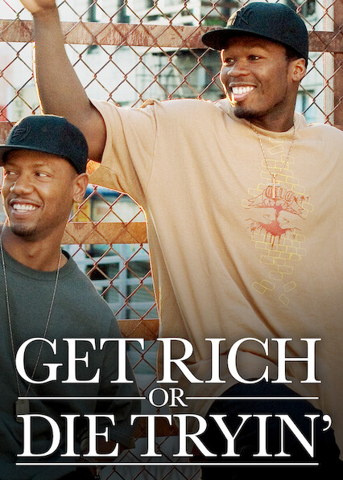
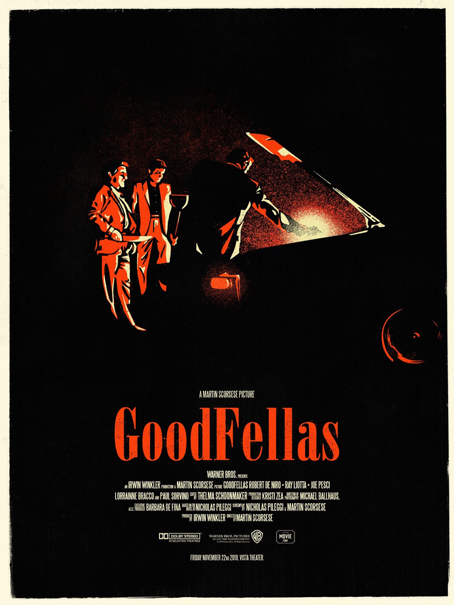
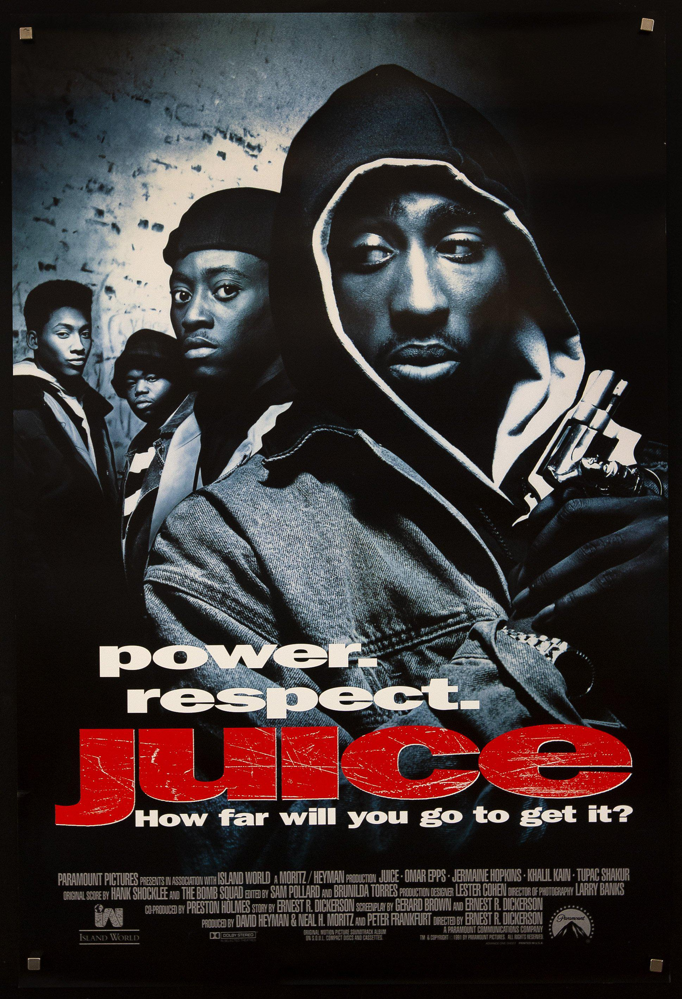
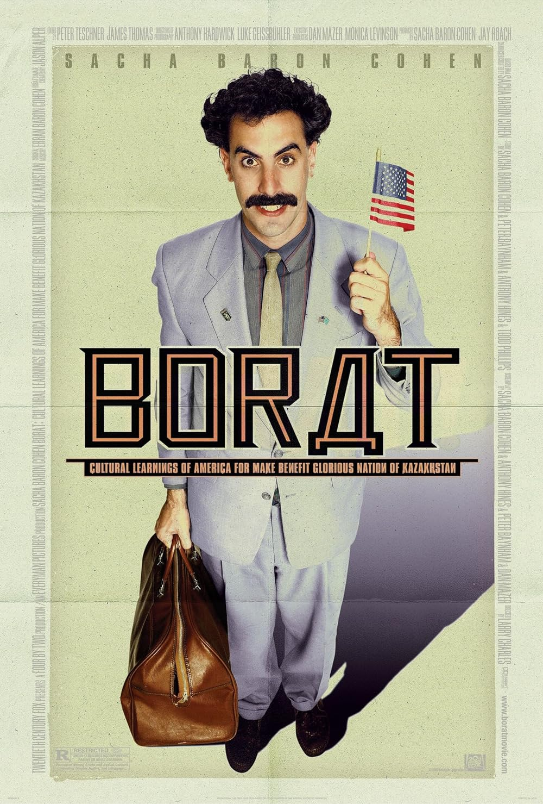
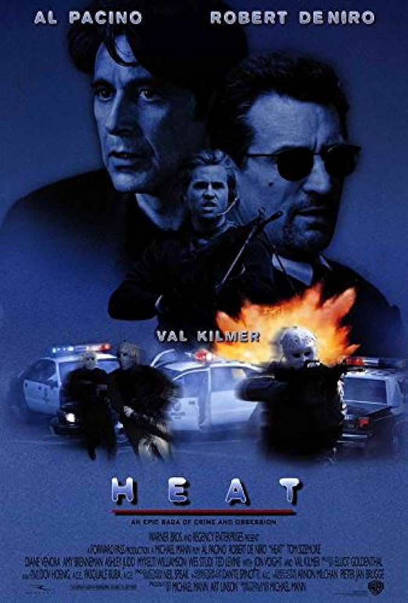
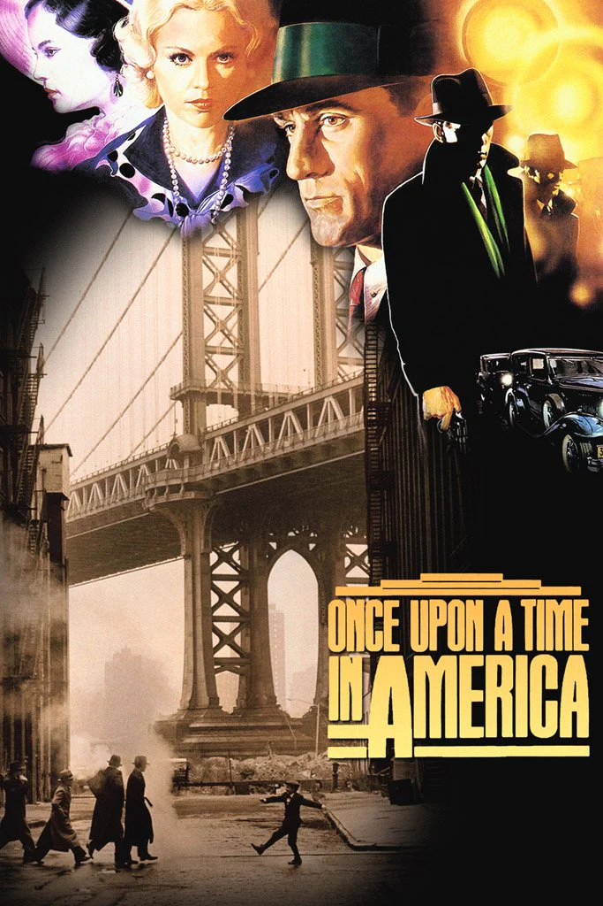
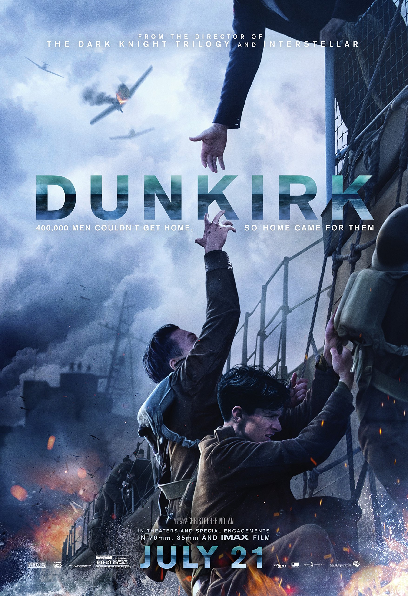

ApeFlickz Top FLicks

Get Rich Or Die Tryin'
(2005)
Marcus (50 Cent) has always known he was going to be a rapper. But when his mother is murdered, young Marcus turns to dealing drugs for New York crime boss Majestic to pay the bills. As dealing turns to gang banging, however, Marcus finds his life spinning out of control, eventually landing in prison.
Learn More
GoodFellas
(1990)
The lowly, blue-collar side of New York's Italian mafia is explored in this crime biopic of wiseguy Henry Hill. As he makes his way from strapping young petty criminal, to big-time thief, to middle-aged cocaine addict and dealer, the film explores in detail the rules and traditions of organized crime.
Learn More
Juice
(1992)
The film touches on the lives of four black youths growing up in Harlem, following their day-to-day activities, their struggles with police harassment, rival neighborhood gangs and their families. The film is the writing and directing debut of Dickerson and features Shakur in his acting debut.
Learn More
Avengers Infinity War
(2018)
Iron Man, Thor, the Hulk and the rest of the Avengers unite to battle their most powerful enemy yet -- the evil Thanos. On a mission to collect all six Infinity Stones, Thanos plans to use the artifacts to inflict his twisted will on reality. The fate of the planet and existence itself has never been more uncertain as everything the Avengers have fought for has led up to this moment.
Learn More
Black Panther
(2018)
After the death of his father, T'Challa returns home to the African nation of Wakanda to take his rightful place as king. When a powerful enemy suddenly reappears, T'Challa's mettle as king -- and as Black Panther -- gets tested when he's drawn into a conflict that puts the fate of Wakanda and the entire world at risk. Faced with treachery and danger, the young king must rally his allies and release the full power of Black Panther to defeat his foes and secure the safety of his people..
Learn More
Borat
(2006)
Kazakh TV talking head Borat is dispatched to the United States to report on the greatest country in the world. With a documentary crew in tow, Borat becomes more interested in locating and marrying Pamela Anderson.
Learn More
The Fast And The Furious
(2002)
Los Angeles police officer Brian O'Conner must decide where his loyalty really lies when he becomes enamored with the street racing world he has been sent undercover to destroy
Learn More
Heat
(1995)
Master criminal Neil McCauley (Robert De Niro) is trying to control the rogue actions of one of his men, while also planning one last big heist before retiring. Meanwhile, Lieutenant Hanna (Al Pacino) attempts to track down McCauley as he deals with the chaos in his own life, including the infidelity of his wife (Diane Venora) and the mental health of his stepdaughter (Natalie Portman). McCauley and Hanna discover a mutual respect, even as they try to thwart each other's plans.
Learn More
Joker
(2019)
Forever alone in a crowd, failed comedian Arthur Fleck seeks connection as he walks the streets of Gotham City. Arthur wears two masks -- the one he paints for his day job as a clown, and the guise he projects in a futile attempt to feel like he's part of the world around him. Isolated, bullied and disregarded by society, Fleck begins a slow descent into madness as he transforms into the criminal mastermind known as the Joker.
Learn More
The GodFather
(1972)
Widely regarded as one of the greatest films of all time, this mob drama, based on Mario Puzo's novel of the same name, focuses on the powerful Italian-American crime family of Don Vito Corleone (Marlon Brando). When the don's youngest son, Michael (Al Pacino), reluctantly joins the Mafia, he becomes involved in the inevitable cycle of violence and betrayal. Although Michael tries to maintain a normal relationship with his wife, Kay (Diane Keaton), he is drawn deeper into the family business.
Learn More
Once Upon A Time In America
(1984)
In 1968, the elderly David "Noodles" Aaronson (Robert De Niro) returns to New York, where he had a career in the criminal underground in the '20s and '30s. Most of his old friends, like longtime partner Max (James Woods), are long gone, yet he feels his past is unresolved. Told in flashbacks, the film follows Noodles from a tough kid in a Jewish slum in New York's Lower East Side, through his rise to bootlegger and then Mafia boss -- a journey marked by violence, betrayal and remorse.
Learn More
Dunkirk
(2019)
In May 1940, Germany advanced into France, trapping Allied troops on the beaches of Dunkirk. Under air and ground cover from British and French forces, troops were slowly and methodically evacuated from the beach using every serviceable naval and civilian vessel that could be found. At the end of this heroic mission, 330,000 French, British, Belgian and Dutch soldiers were safely evacuated.
Learn More